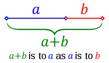
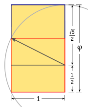
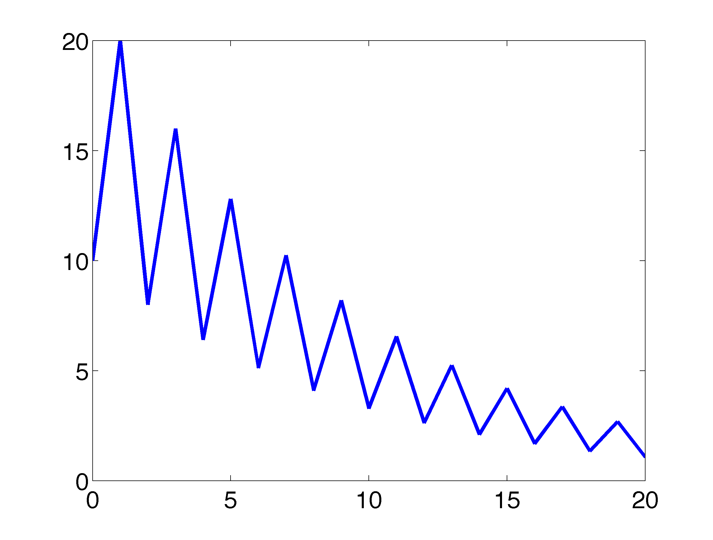
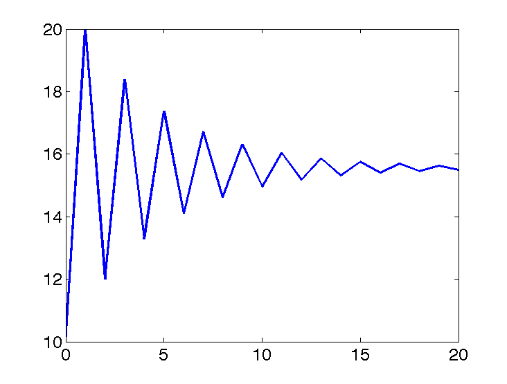

5 Discrete models of higher order
It is not unusual for biological systems to have multiple variables which influence each other, and thus need to be accounted in any model that aims to be useful. In this unit we will learn how to construct such models, and the methods for analyzing, solving, and numerically simulating them. We will see how models with two or more variables are used in a variety of biological fields: to describe population demographics, motility of cochlear cells, psychology of human relationships, gene regulation, and motion of molecular structures.
We will need new mathematical tools in order to analyze models with multiple variables. These methods are primarily from the realm of linear algebra. We will express multiple equations in terms of matrices and vectors, and learn how to operate on these objects. The dynamics of these models can be analyzed by doing calculations with the matrices, specifically finding special numbers and vectors known as eigenvalues and eigenvectors. These concepts, which will be introduced later, are absolutely central to all of applied mathematics, and to computational biology in particular.
In this chapter, the section on modeling is devoted to an old model of a population where individuals live for two generations, known as the Fibonacci model. We then describe how this model can be written down either as a single difference equation of second order, or as two equation of the first order, which may be represented in matrix form. We will learn to solve second order difference equations with an explicit formula, and then introduce some elementary matrix operations. In the computational section we will use the matrix notation to compute numerical solutions for higher order difference equations. Finally, in the synthesis section we will analyze two demographic population models, in which the population is broken into age groups. The matrix notation will be important for concisely representing different parameters for each age group.
In this chapter you will learn to:
- build higher order population models
- express age-structured models in matrix form
- analyze solutions of these models on paper
- use Python for matrix operations
- classify the behavior of solutions of these models
5.1 higher order difference equations
So far we have dealt with difference equations in which the value of the dependent variable at the next time step \(x_{t+1}\) depends solely on the variable at the present time \(x_t\). These are known as first order difference equations because they only require one step from the present to the future. We will now examine difference equations where the future value depends not only on the present value \(x_t\), but also on the past values: \(x_{t-1}\), etc. The number of time steps that the equation looks into the past is the the order of the scheme.
5.1.1 the Fibonacci model and sequence
The Italian mathematician Leonardo Fibonacci, who lived in the late 12th - early 13th centuries, contributed greatly to the development of mathematics in the western world. For starters, he introduced the Hindu-Arabic numerals we use today, in place of the cumbersome Roman numerals. He also constructed an early model of population growth, which considered a population of individuals that lived for two generations. The first generation does not reproduce, but in the second generation each individual produces a single offspring (or each pair produces a new pair) and then dies. Then the total number of individuals at the next time step is the sum of the individuals in the previous two time steps ({numref}fig-fib-rabbits) This is described by the following second order difference equation:
\[ N_{t+1} = N_t + N_{t-1} \] (fibonacci)
The famous Fibonacci sequence is a solution of this equation. For a second-order equations, two initial conditions are required, and if we take \(N_0 = 0\) and \(N_1 = 1\), then the resulting sequence will look as follows:
\[ 0, 1, 1, 2, 3, 5, 8, 13, 21, 34, 55, ... \]
The Fibonacci sequence is famously found in many natural phenomena, including in phyllotaxis (arrangement of parts in plants), and spirals on some mollusk shells, e.g. Nautilus pompilius ({numref}fig-fib-rabbits). It may be observed by counting the number of spirals that can be drawn between plant units (such as seeds or petals), and observing that alternating the right-handed and left-handed spirals, while moving away from the center, often results in the Fibonacci sequence. The precise reason for this is unclear, although explanations exist, for instance that this pattern provides the most efficient packing of seeds.

[The shell of the Nautilus pompilius mollusk has the shape of a Fibonacci spiral, shown here filled with squares of the corresponding size http://mathforum.org/mathimages] (images/fibo_nautilus.jpg)
5.1.2 matrix representation of discrete time models
The Fibonacci model above can be represented by two equations instead of one, if we consider two dependent variables. Let us represent the number of rabbits in generation 1 (young) by \(x\) and in generation 2 (old) by\(y\). The new generation at the next time (\(t+1\)) is comprised of offspring of the young and old generations at time \(t\), while the old generation at the next time is simply is young generation at the current time. This gives the following set of equations:
\[ \begin{aligned} x_{t+1} & = & x_t + x_{t-1}\\ x_{t} & = & x_t \end{aligned} \] The advantage of re-writing a single equation as two is that the new system is first order, that is, only relies on the values of the variables at the current time \(t\). These equations can also be written in matrix form:
\[ \left(\begin{array}{c}x_{t+1} \\x_{t}\end{array}\right) = \left(\begin{array}{c}x_t + x_{t-1} \\x_ t \end{array}\right) = \left(\begin{array}{cc}1 & 1\\1 & 0\end{array}\right) \left(\begin{array}{c}x_t \\ x_{t-1} \end{array}\right) \]
This representation is convenient and leads to a set of rules for matrix manipulation. We wrote the write-hand side as a product of a matrix containing the coefficients of \(x_t\) and \(y_t\) and the vector with the two variables. The product of the matrix and the vector is equal to the original vector.
5.2 Solutions for linear higher order difference equations
5.2.1 solutions of linear difference equations
Solutions for first order linear difference equations are exponential in form. The solutions for second order linear difference equations consist of a sum of two exponentials with different bases. For the following general linear second order difference equation:
\[ x_{t+1} = ax_{t} + b x_{t-1} \]
The solution can be written as follows:
\[ x_t = A \lambda_1^t + B \lambda_2^t \]
The solution for a second order difference equation is a sum of two terms that look like solutions to first order difference equations. There are two different types of constants in the solution: the bases of the exponential \(\lambda_1, \lambda_2\) and the multiplicative constants \(A\) and \(B\). They are different because the exponential parameters depend on the equation itself, but not on the initial conditions, while the multiplicative constants depend only on the initial conditions. Therefore, they can be determined separately:
Let us apply this approach to solving the Fibonacci difference equation {eq}fibonacci:
\[ \lambda^{2}= \lambda + 1 \Longrightarrow \; \lambda^2-\lambda-1= 0 \]
We find the solutions by the quadratic formula: \(\lambda_{1,2} = (1\pm \sqrt 5)/2\).
Now let us use the initial conditions \(N_0 = 0\) and \(N_1 = 1\). The two multiplicative constants must then satisfy the following:
\[ 0 = A + B; \; 1 = A\lambda_1 + B\lambda_2 \]
By the formula we found above, the initial conditions are:
\[ A = \frac{-1}{\lambda_2 - \lambda_1} = \frac{1}{\sqrt 5} ; \; B = \frac{1}{\lambda_2 - \lambda_1} = \frac{-1}{\sqrt 5} \]
The complete solution, which gives the \(t\)-th number in the Fibonacci sequence is:
\[ N_t = \frac{1}{\sqrt 5}\left( \frac{1+ \sqrt 5}{2}\right)^t - \frac{1}{\sqrt 5}\left(\frac{1- \sqrt 5}{2}\right)^t \]
There are several remarkable things about this formula. First is the fact that despite the abundance of irrational numbers, for each integer \(t\) the number \(N_t\) is an integer. One can check this by programming the formula in your favorite language, and plugging in any value of \(t\).
Second, an important feature of the Fibonacci sequence is the ratio between successive terms in the sequence. Notice that of the two terms in the formula, \((\frac{1+ \sqrt 5}{2})^t\) grows as \(t\) increases, while \((\frac{1- \sqrt 5}{2})^t\) decreases to zero, because the first number is greater than 1, while the second is less than 1. This means that for large \(t\), the terms in the Fibonacci sequence are approximately equal to:
\[ N_t \approx \frac{1}{\sqrt 5}\left( \frac{1+ \sqrt 5}{2}\right)^t \]
Since each successive term is multiplied by \((1+\sqrt5)/2\), the ratio between successive terms, \(\phi = N_{t+1}/N_t\) approaches the value \(\phi=(1+\sqrt5)/2 \approx 1.618\) for increasing \(t\).
This number \((1+\sqrt 5)/2\) is called the golden ratio or golden section, and was known from antiquity as the most aesthetically pleasing proportion in architecture and art, when used as a ratio between the height and width of the piece of art. Algebraically, the golden ratio is defined to be the number that is both the ratio between two quantities, e.g. \(a\) and \(b\), and also the ratio between the sum of the two quantities (\(a+b\)) and the larger of the quantities e.g. \(b\) ({numref}fig-gold-ratio). Geometrically, the golden ratio can be constructed as the ratio between two sides of a rectangle, \(a\) and \(b\), which are also part of the larger rectangle with sides \(a+b\) and \(a\). This construction is shown in {numref}fig-gold-rect.


To show that the geometric golden ratio is the same as the ratio that appears in the Fibonacci sequence, let us write down the algebraic condition stated above. Because we are interested in the ratio, let the smaller quantity be 1 and the larger one be \(\phi\); by the definition we obtain the following. \(\phi = (\phi+1)/\phi\), thus \(\phi^2-\phi-1 = 0\). This is the same quadratic equation that we derived for the exponential bases of the solution above. The solution to this equation (by the quadratic formula) is \(\phi=(1\pm\sqrt5)/2\), and the positive solution is the golden ratio.
5.3 Matrices and vectors
One basic advantage of matrix notation is that it makes it possible to write any set of linear equations as a single matrix equation. By linear equations we mean those that contain only constants or first powers of the variables. The field of mathematics studying matrices and their generalizations is called linear algebra; it is fundamental to both pure and applied mathematics. In this section we will learn some basic facts about matrices and their properties.
5.3.1 elementary matrix operations
Now is a good time to properly define what matrices are and how we can operate on them. We have already seen a matrix for the Fibonacci model, but just to make sure all of the terms are clear:
A matrix \(A\) is a rectangular array of elements \(A_{ij}\), in which \(i\) denotes the row number (index), counted from the top, and \(j\) denotes the column number (index), counted from left to right. The dimensions of a matrix are defined by the number of rows and columns, so an n by m matrix contains \(n\) rows and \(m\) columns.
The elements of a matrix \(A\) which have the same row and column index, e.g. \(A_{33}\) are called the diagonal elements. Those which do not lie on the diagonal are called the off-diagonal elements.
For instance, in the 3 by 3 matrix below, the elements \(a, e, i\) are the diagonal elements: \[ A = \left(\begin{array}{ccc}a & b & c \\d & e & f \\g & h & i\end{array}\right) \]
Matrices can be added together if they have the same dimensions. Then matrix addition is defined simply as adding up corresponding elements, for instance the element in the second row and first column of matrix \(A\) is added with the element in the second row and first column of matrix \(B\) to give the element in the second row and first column of matrix \(C\). Recall from the previous chapter that rows in matrices are counted from top to bottom, while the columns are counted left to right.
5.3.2 matrix multiplication
Matrices can also be multiplied, but this operation is trickier. For mathematical reasons, multiplication of matrices \(A \times B\) does not mean multiplying corresponding elements. Instead, the definition seeks to capture the calculation of simultaneous equations, like the one in the previous section. Here is the definition of matrix multiplication, in words and in a formula (strang_linear_2005?):
The product of matrices \(A\) and \(B\) is defined to be a matrix \(C\), whose element \(c_{ij}\) is the dot product of the i-th row of \(A\) and the j-th column of \(B\):
\[ c_{ij} = a_{i1}b_{1j} + a_{i2}b_{2j} + ... + a_{iN}b_{Nj} = \sum_{k=1}^q a_{ik} b_{kj} \]
This definition is possible only if the length of the rows of \(A\) and the length of columns of \(B\) are the same, since we cannot compute the dot product of two vectors of different lengths. Matrix multiplication is defined only if \(A\) is \(n\) by \(q\) and \(B\) is \(q\) by \(m\), for any integers \(n\), \(q\), and \(m\) and the resulting matrix \(C\) is a matrix with \(n\) rows and \(m\) columns. In other words, the inner dimensions of matrices have to match in order for matrix multiplication to be possible. This is illustrated in {numref}fig-mat-mult

Example. Let us multiply two matrices to illustrate how it’s done. Here both matrices are 2 by 2, so their inner dimensions match and the resulting matrix is 2 by 2 as well:
\[ \left(\begin{array}{cc}1 & 3 \\ 6 & 1\end{array}\right) \times \left(\begin{array}{cc}4 & 1 \\5 & -1 \end{array}\right) = \left(\begin{array}{cc}1 \times 4 + 3 \times 5 & 1 \times 1 +3 \times (-1) \\ 6 \times 4+ 1 \times 5 & 6 \times 1+1 \times (-1) \end{array}\right) = \left(\begin{array}{cc}19 & -2 \\ 29 & 5 \end{array}\right) \]
One important consequence of this definition is that matrix multiplication is not commutative. If you switch the order, e.g. \(B \times A\), the resulting multiplication requires dot products of the rows of \(B\) by the columns of \(A\), and except in very special circumstances, they are not the same. In fact, unless \(m\) and \(n\) are the same integer, the product of \(B \times A\) may not be defined at all.
In the example above of the matrix representation of the Fibonacci model, we implicitly used the conventional rules for multiplying matrices and vectors. Each row of the matrix
\[ \left(\begin{array}{cc}1 & 1\\1 & 0\end{array}\right) \]
contains the numbers that multiply the two elements of the vector
\[ \left(\begin{array}{c}x_t \\ x_{t-1} \end{array}\right) \]
in order to generate the two equations \(x_{t+1} = x_t + x_{t-1}\) and \(x_t = x_t\).
Take the matrix equation for the Fibonacci difference equation above. Put the first two values \(0\) and \(1\) into the vector. Then perform the multiplication of the matrix and the vector:
\[ \left(\begin{array}{cc}1 & 1\\1 & 0\end{array}\right)\left(\begin{array}{c}1\\ 0\end{array}\right) = \left(\begin{array}{c}0+ 1 \\ 1 \end{array}\right) = \left(\begin{array}{c}1 \\ 1 \end{array}\right) \]
We can take the resulting vector and apply the matrix again, to propagate the sequence for one more step:
\[ \left(\begin{array}{cc}1 & 1\\1 & 0\end{array}\right) \times \left(\begin{array}{c}1\\ 1\end{array}\right) = \left(\begin{array}{c}1+ 1 \\ 1 \end{array}\right) = \left(\begin{array}{c}2 \\ 1 \end{array}\right) \]
Multiplying matrices and vectors is a basic operation that depends on the orientation of the vector. One can only multiply a square matrix by a column vector on the left, as we saw above, not on the right. By the same token, a row vector can only multiply a matrix on the right, and not the left, because we must use the rows of the matrix on the left to multiply the columns of the matrix on the right. This underscores the important fact that matrix multiplication is not commutative.
5.3.3 matrix inverses
Above we learned the rules of matrix multiplication, and we can write \(C = A \times B\), so long as the number of columns in \(A\) matches the number of rows in \(B\). However, what if we want to reverse the process? If we know the resulting matrix \(C\), and one of the two matrices, e.g. \(A\), how can we find \(B\)? Naively, we would like to be able to divide both sides by the matrix \(A\), and find \(B = C/A\). However, things are more complicated for matrices.
Properly speaking, we need to introduce the inverse of a matrix \(A\). If we think about inverses of real numbers, \(a^{-1}\) is a number that when it multiplies \(a\), results in one. In order to define the equivalent for matrices, we first need to introduce the unity of matrix multiplication.
The identity matrix is an \(n\) by \(n\) matrix that does not change another \(n\) by \(n\) matrix by multiplication:
\[ A \times I = I \times A = A \]
The diagonal elements of the identity matrix are 1s and all off-diagonal elements are zero.
Example: Using the definition of matrix multiplication we can verify that this definition works for any 2 by 2 matrix:
\[ \begin{pmatrix}-6 & -2 \\ 12 & -1 \end{pmatrix} \times \begin{pmatrix} 1 & 0 \\ 0 & 1\end{pmatrix} = \begin{pmatrix}-6\times 1 + -2\times 0 & -6\times 0 + -2\times 1 \\ 12\times 1 -1 \times 0 & 12\times 0 -1 \times 1 \end{pmatrix} = \begin{pmatrix}-6 & -2 \\ 12 & -1 \end{pmatrix} \]
Now that we have specified the identity, we can define the matrix inverse:
A square matrix \(A\) has an inverse matrix \(A^{-1}\) if it satisfies the following:
\[ A^{-1} \times A = A \times A^{-1} = I \]
Finding the inverse of a matrix is not simple, and we will be content to let computers handle the dirty work. In fact, not every matrix possesses an inverse. There is a test for existence of an inverse of \(A\), and it depends on the determinant (strang_linear_2005?):
A square matrix \(A\) possesses an inverse \(A^{-1}\) and is called invertible if and only if its determinant is not zero.
5.3.4 matrices transform vectors
In this section we will learn to characterize square matrices by finding special numbers and vectors associated with them. At the core of this analysis lies the concept of a matrix as an operator that transforms vectors by multiplication. To be clear, in this section we take as default that the matrices \(A\) are square, and that vectors \(\vec v\) are column vectors, and thus will multiply the matrix on the right: \(A \times \vec v\).
A matrix multiplied by a vector produces another vector, provided the number of columns in the matrix is the same as the number of rows in the vector. This can be interpreted as the matrix transforming the vector \(\vec v\) into another one: \(A \times \vec v = \vec u\). The resultant vector \(\vec u\) may or may not resemble \(\vec v\), but there are special vectors for which the transformation is very simple.
Example. Let us multiply the following matrix and vector (specially chosen to make a point):
\[ \left(\begin{array}{cc}2 & 1 \\ 2& 3\end{array}\right) \times \left(\begin{array}{c}1 \\ -1 \end{array}\right) = \left(\begin{array}{c}2 -1 \\ 2 - 3 \end{array}\right) = \left(\begin{array}{c} 1 \\ -1 \end{array}\right) \]
We see that this particular vector is unchanged when multiplied by this matrix, or we can say that the matrix multiplication is equivalent to multiplication by 1. Here is another such vector for the same matrix:
\[ \left(\begin{array}{cc}2 & 1 \\ 2& 3\end{array}\right) \times \left(\begin{array}{c}1 \\ 2 \end{array}\right) = \left(\begin{array}{c}2 +2 \\ 2 + 6 \end{array}\right) = \left(\begin{array}{c} 4 \\ 8 \end{array}\right) \]
In this case, the vector is changed, but only by multiplication by a constant (4). Thus the geometric direction of the vector remained unchanged.
Generally, a square matrix has an associated set of vectors for which multiplication by the matrix is equivalent to multiplication by a constant. This can be written down as a definition:
An eigenvector of a square matrix \(A\) is a vector \(\vec v\) for which matrix multiplication by \(A\) is equivalent to multiplication by a constant. This constant \(\lambda\) is called its eigenvalue of \(A\) corresponding the the eigenvector \(\vec v\). The relationship is summarized in the following equation:
\[ A \times \vec v = \lambda \vec v \] (def-eigen)
Note that this equation combines a matrix (\(A\)), a vector (\(\vec v\)) and a scalar \(\lambda\), and that both sides of the equation are column vectors. This definition is illustrated in {numref}fig-eig-vec, showing a vector (\(v\)) multiplied by a matrix \(A\), and the resulting vector \(\lambda v\), which is in the same direction as \(v\), due to scalar multiplying all elements of a vector, thus either stretching it if \(\lambda>1\) or compressing it if \(\lambda < 1\). This assumes that \(\lambda\) is a real number, which is not always the case, but we will leave that complication aside for the purposes of this chapter.

The definition does not specify how many such eigenvectors and eigenvalues can exist for a given matrix \(A\). There are usually as many such vectors \(\vec v\) and corresponding numbers \(\lambda\) as the number of rows or columns of the square matrix \(A\), so a 2 by 2 matrix has two eigenvectors and two eigenvalues, a 5x5 matrix has 5 of each, etc. One ironclad rule is that there cannot be more distinct eigenvalues than the matrix dimension. Some matrices possess fewer eigenvalues than the matrix dimension, those are said to have a degenerate set of eigenvalues, and at least two of the eigenvectors share the same eigenvalue.
The situation with eigenvectors is trickier. There are some matrices for which any vector is an eigenvector, and others which have a limited set of eigenvectors. What is difficult about counting eigenvectors is that an eigenvector is still an eigenvector when multiplied by a constant. You can show that for any matrix, multiplication by a constant is commutative: \(cA = Ac\), where \(A\) is a matrix and \(c\) is a constant. This leads us to the important result that if \(\vec v\) is an eigenvector with eigenvalue \(\lambda\), then any scalar multiple \(c \vec v\) is also an eigenvector with the same eigenvalue. The following demonstrates this algebraically:
\[ A \times (c \vec v) = c A \times \vec v = c \lambda \vec v = \lambda (c \vec v) \]
This shows that when the vector \(c \vec v\) is multiplied by the matrix \(A\), it results in its being multiplied by the same number \(\lambda\), so by definition it is an eigenvector. Therefore, an eigenvector \(\vec v\) is not unique, as any constant multiple \(c \vec v\) is also an eigenvector. It is more useful to think not of a single eigenvector \(\vec v\), but of a collection of vectors that can be interconverted by scalar multiplication that are all essentially the same eigenvector. Another way to represent this, if the eigenvector is real, is that an eigenvector as a direction that remains unchanged by multiplication by the matrix, such as direction of the vector \(v\) in figure . As mentioned above, this is true only for real eigenvalues and eigenvectors, since complex eigenvectors cannot be used to define a direction in a real space.
To summarize, eigenvalues and eigenvectors of a matrix are a set of numbers and a set of vectors (up to scalar multiple) that describe the action of the matrix as a multiplicative operator on vectors. “Well-behaved” square \(n\) by \(n\) matrices have \(n\) distinct eigenvalues and \(n\) eigenvectors pointing in distinct directions. In a deep sense, the collection of eigenvectors and eigenvalues defines a matrix \(A\), which is why an older name for them is characteristic vectors and values.
5.3.5 calculating eigenvalues
Finding the eigenvalues and eigenvectors analytically, that is on paper, is quite laborious even for 3 by 3 or 4 by 4 matrices and for larger ones there is no analytical solution. In practice, the task is outsourced to a computer. Nevertheless, it is useful to go through the process in 2 dimensions in order to gain an understanding of what is involved.
First, let us define two quantities that will be useful for this calculation:
The trace \(\tau\) of a matrix \(A\) is the sum of the diagonal elements: \(\tau = \sum_i A_{ii}\)
The determinant \(\Delta\) of a 2x2 matrix \(A\) is given by the following: \(\Delta = ad - bc\), where
\[ A = \left(\begin{array}{cc}a & b \\c & d\end{array}\right) \]
For larger matrices, the determinant is defined recursively, in terms of 2x2 submatrices of the larger matrix, but we will not give the full definition here.
From the definition [def:eigen] of eigenvalues and eigenvectors, the condition can be written in terms of the four elements of a 2 by 2 matrix:
\[ \left(\begin{array}{cc}a & b \\c & d\end{array}\right) \times \left(\begin{array}{c}v_1 \\ v_2 \end{array}\right) = \left(\begin{array}{c}av_1 +b v_2\\ cv_1+ dv_2 \end{array}\right) = \lambda \left(\begin{array}{c}v_1 \\ v_2 \end{array}\right) \]
This is now a system of two linear algebraic equations, which we can solve by substitution. First, let us solve for \(v_1\) in the first row, to get
\[ v_1 = \frac{-bv_2}{a-\lambda} \]
Then we substitute this into the second equation and get:
\[ \frac{-bcv_2}{a-\lambda} +(d-\lambda)v_2 = 0 \]
Since \(v_2\) multiplies both terms, and is not necessarily zero, we require that its multiplicative factor be zero. Doing a little algebra, we obtain the following, known as the characteristic equation of the matrix:
\[ -bc +(a-\lambda)(d-\lambda) = \lambda^2-(a+d)\lambda +ad-bc = 0 \]
This equation can be simplified by using two quantities we defined at the beginning of the section: the sum of the diagonal elements called the trace \(\tau = a+d\), and the determinant \(\Delta = ad-bc\). The quadratic equation has two solutions, dependent solely on \(\tau\) and \(\Delta\):
\[ \lambda = \frac{\tau \pm \sqrt{\tau^2-4\Delta}}{2} \]
This is the general expression for a 2 by 2 matrix, showing there are two possible eigenvalues. Note that if \(\tau^2-4\Delta>0\), the eigenvalues are real, if \(\tau^2-4\Delta<0\), they are complex (have real and imaginary parts), and if \(\tau^2-4\Delta=0\), there is only one eigenvalue. This situation is known as degenerate, because two eigenvectors share the same eigenvalue.
Example. Let us take the same matrix we looked at in the previous subsection:
\[ A = \left(\begin{array}{cc}2 & 1 \\ 2& 3\end{array}\right) \]
The trace of this matrix is \(\tau = 2+3 =5\) and the determinant is \(\Delta = 6 - 2 = 4\). Then by our formula, the eigenvalues are:
\[ \lambda = \frac{5 \pm \sqrt{5^2-4 \times 4}}{2} = \frac{5 \pm 3}{2} = 4, 1 \]
These are the multiples we found in the example above, as expected.
A real matrix can have complex eigenvalues and eigenvectors, but whenever it acts on a real vector, the result is still real. This is because the complex numbers cancel each other’s imaginary parts. For discrete time models, it is enough to consider the absolute value of a complex eigenvalue, which is defined as following: \(|a +b i|= \sqrt{a^2 + b^2}\). As before, the eigenvalue with the largest absolute value “wins” in the long term.
5.3.6 calculation of eigenvectors on paper
The surprising fact is that, as we saw in the last subsection, the eigenvalues of a matrix can be found without knowing its eigenvectors! However, the converse is not true: to find the eigenvectors, one first needs to know the eigenvalues. Given an eigenvalue \(\lambda\), let us again write down the defining equation of the eigenvector for a generic 2 by 2 matrix:
\[ \left(\begin{array}{cc}a & b \\c & d\end{array}\right)\left(\begin{array}{c}v_1 \\ v_2 \end{array}\right) = \left(\begin{array}{c}av_1 +b v_2\\ cv_1+ dv_2 \end{array}\right) = \lambda \left(\begin{array}{c}v_1 \\ v_2 \end{array}\right) \]
This vector equation is equivalent to two algebraic equations:
\[ \begin{aligned} av_1 + b v_2 &= \lambda v_1 \\ cv_1 + d v_2 &= \lambda v_2 \end{aligned} \]
Since we’ve already found \(\lambda\) by solving the characteristic equation, this is two linear equations with two unknowns (\(v_1\) and \(v_2\)). You may remember from advanced algebra that such equations may either have a single solution for each unknown, but sometimes they may have none, or infinitely many solutions. Since there are unknowns on both sides of the equation, we can make both equations be equal to zero:
\[ \begin{aligned} (a-\lambda)v_1 + b v_2 &= 0 \\ cv_1 + (d-\lambda ) v_2 &=0 \end{aligned} \]
So the first equation yields the relationship \(v_1 = -v_2 b/(a-\lambda)\) and the second equation is \(v_1 = -v_2(d-\lambda)/c\), which we already obtained in the last subsection. We know that these two equations must be the same, since the ratio of \(v_1\) and \(v_2\) is what defines the eigenvector. So we can use either expression to find the eigenvector.
Example. Let us return to the same matrix we looked at in the previous subsection:
\[ A = \left(\begin{array}{cc}2 & 1 \\ 2& 3\end{array}\right) \]
The eigenvalues of the matrix are 1 and 4. Using our expression above, where the element \(a=2\) and \(b=1\), let us find the eigenvector corresponding to the eigenvalue 1:
\[ v_1 = - v_2 \times 1/(2-1) = - v_2 \]
Therefore the eigenvector is characterized by the first and second elements being negatives of each other. We already saw in the example two subsections above that the vector \((1,-1)\) is such as eigenvector, but it is also true of the vectors \((-1,1)\), \((-\pi, \pi)\) and \((10^6, -10^6)\). This infinite collection of vectors, all along the same direction, can be described as the eigenvector (or eigendirection) corresponding to the eigenvalue 1.
Repeating this procedure for \(\lambda = 4\), we obtain the linear relationship: \[v_1 = - v_2 \times 1/(2-4) = 0.5 v_2\] Once again, the example vector we saw two subsections \((2,1)\) is in agreement with our calculation. Other vectors that satisfy this relationship include \((10,5)\), \((-20,-10)\), and \((-0.4,-0.2)\). This is again a collection of vectors that are all considered the same eigenvector with eigenvalue 4 which are all pointing in the same direction, with the only difference being their length.
5.4 Age-structured population models
It is often useful to divide a population into different groups by age in order to better describe the population dynamics. Typically, individuals at different life stages have distinct mortality and reproductive rates. The total population is represented as a vector, where each component denotes the size of the corresponding age group. The matrix \(A\) that multiplies this vector defines the dynamics of the higher order difference equation:
\[ \vec x_{t+1} = A \vec x_t \]
We will now analyze two common age-structured models used by biologists and demographers.
5.4.1 Leslie models
One type of age-structured model used to describe population dynamics is called the Leslie model (edelstein-keshet_mathematical_2005?; allman_mathematical_2003?). In this model, there are several different age groups, and after a single time step, individuals in each one all either advance to the next oldest age group or die. This type of can be described in general using the following matrix (called a Leslie matrix):
\[ L = \left(\begin{array}{cccc}f_1 & f_2 & ... & f_n \\s_1 & 0 & ... & 0 \\... & ... &...& ... \\0 & ... & s_{n-1}& 0\end{array}\right) \]
where \(f_i\) is the fecundity (number of offspring produced by an individual) of the \(i\)-th age group, and \(s_i\) is the survival rate of the \(i\)-th age group (the fraction of the group that survives and becomes the next age group). Population of the next generation is given by multiplying the age-structure vector of the previous generation: \(\vec x_{t+1} = L \vec x_t\). Note that each age group proceeds straight to the next age group (multiplied by the survival rate) but no individuals stay in the same age group after one time step. Biologically, this assumes a clear, synchronized maturation of every age group in the population. Mathematically, this means that the diagonal elements of the matrix (those in the \(i\)-th row and \(i\)-th column) are 0.
Let us model a hypothetical population in which there are two age groups: a young age group which does not reproduce, with survival rate of 0.4 to become mature, and a mature age group which reproduces with mean fecundity of 2, and then dies. Let \(j_t\) be the population of the juveniles at time \(t\), and \(m_t\) be the population of mature adults. Then the following Leslie matrix describes this model:
\[ \left(\begin{array}{c}j_{t+1}\\ m_{t+1}\end{array}\right) = \left(\begin{array}{cc}0 & 2 \\0.4 & 0\end{array}\right) \left(\begin{array}{c}j_{t}\\ m_{t}\end{array}\right) \]
We can also express this model as a single difference equation, with the variable of total population. Because it takes two time steps for a young individual to reproduce, we need to consider the population in two previous time steps. The matrix equation above can be written as the following two equations:
\[ j_{t+1} = 2 m_t ; \; m_{t+1} = 0.4 j_t \]
This two-dimensional model can be turned into a second-order model by a simple substitution. The first equation can be written as \(j_t = 2 m_{t-1}\), and then substitute it into second one to, to obtain:
\[ m_{t+1} = 0.8m_{t-1} \]
We can solve this equation using the tools from the analytical section. First, let us find the exponential bases \(\lambda\):
\[ \lambda^2 = 0.8 \Rightarrow \lambda = \pm \sqrt{0.8} \]
To solve the dynamical system completely, let us suppose we have the initial conditions \(m_0\) and \(m_1\). Then we have the following equations to solve:
\[ A + B = m_0; \; A\sqrt 0.8 - B \sqrt 0.8 = m_1\Rightarrow (m_0 - B) \sqrt 0.8 - B \sqrt 0.8 = m_1 \Rightarrow B =m_0 - \frac{m_1}{\sqrt 8}; \; A = \frac{m_1}{\sqrt 8} \]
We have the following analytic solution of the difference equation:
\[ m_t = \frac{m_1}{\sqrt 8} \sqrt 8^t - \left(m_0 - \frac{m_1}{\sqrt 8} \right) \sqrt 8^t = 2m_1 \sqrt 8^{t-1} - m_0 \sqrt 8^{t} \]
This solution can be used to predict the long-term dynamics of the population model. Since the bases of the exponentials are less than 1, the total number of individuals will decline to zero. This solution can be verified via a numerical solution of this model. {numref}fig-leslie shows the population over 20 time steps, starting with 10 individuals both for \(m_0\) and \(m_1\).

5.4.2 Usher models
Usher models are a modification of the Leslie model, where individuals are allowed to remain in the same age group after one time step. Thus, the form of an Usher matrix is:
\[ U = \left(\begin{array}{cccc}f_1 & f_2 & ... & f_n \\s_1 & r_2 & ... & 0 \\... & ... &...& ... \\0 & ... & s_{n-1} & r_n\end{array}\right) \]
where \(r_i\) is the rate of remaining in the same age cohort.
For instance, it the population model above, we can introduce a rate of adults remaining adults (rather than dead) after a time step (let it be 0.2):
\[ U = \left(\begin{array}{cc}0 & 2 \\0.4 & 0.2\end{array}\right) \]
\[ j_{t+1} = 2 m_t ; \; m_{t+1} = 0.4 j_t +0.2m_t \]
Once again, we can find the solution for this model by recasting it as a single second-order equation. Let us substitute \(2m_{t-1}\) for \(j_t\) to obtain the following:
\[ m_{t+1} = 0.4(2 m_{t-1} )+ 0.2 m_t \]
We can solve this second-order equation in the same fashion as above:
\[ \lambda^2 = 0.2 \lambda + 0.8 \Rightarrow \lambda = (0.2 \pm \sqrt {0.04+3.2})/2 = (0.2 \pm 1.8)/2 = 1, -0.8 \]
The two exponential bases are 1 and -0.8, and therefore the solution has the general form \(m_t = A + B(-0.8)^t\). The behavior of the solution over the long term is going to stabilize at some level \(A\), determined by the initial conditions, because the term \(B(-0.8)^t\), when raised to progressively larger powers, will decay to 0.
We can run a computer simulation to test this prediction, and see that the total population indeed approaches a constant. Starting with population of 10 individuals in the first two time steps, the time course of the population is plotted in {numref}fig-usher.
